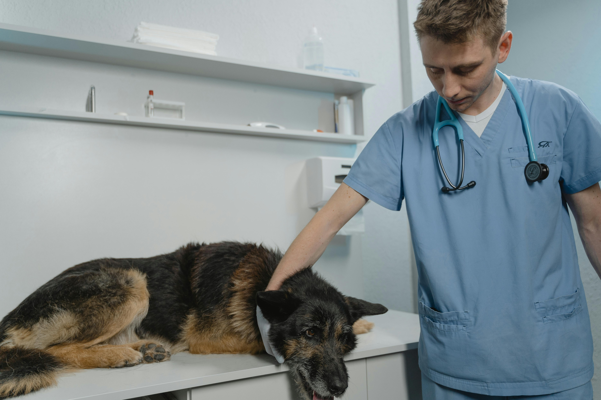
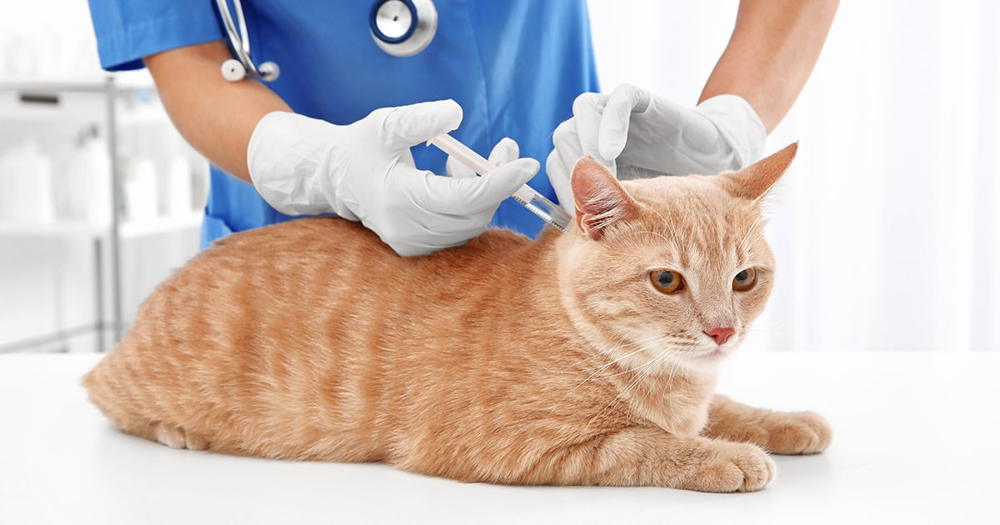
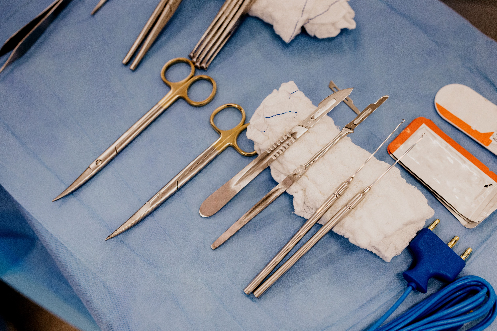
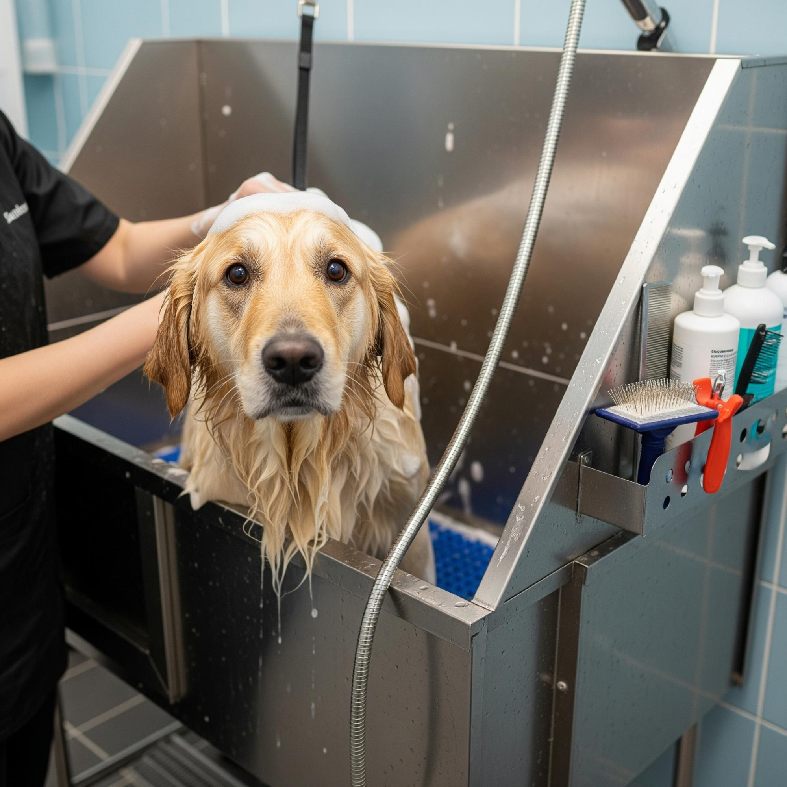
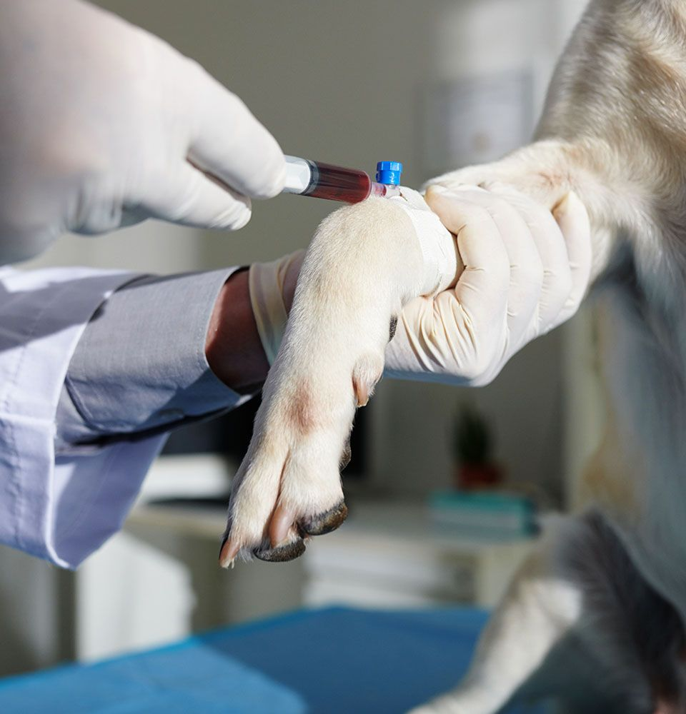
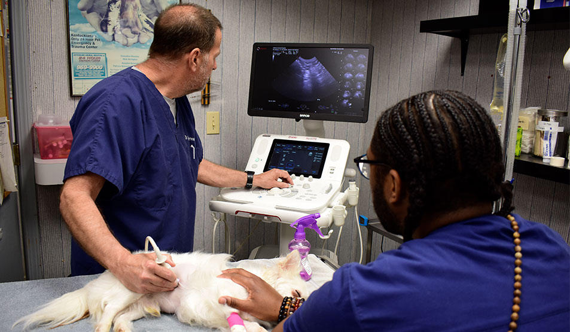

Nossos Serviços

Consulta Veterinária
Avaliação completa do seu pet com profissionais qualificados, garantindo diagnósticos precisos e cuidado individualizado.

Vacinação
Calendário vacinal atualizado para cães e gatos, protegendo seu animal contra as principais doenças.

Cirurgia
Centro cirúrgico equipado com tecnologia moderna para procedimentos eletivos e de emergência com total segurança.

Higienização
Banho e tosa realizados por profissionais treinados, com produtos adequados para cada tipo de pelagem e porte. Além de deixar seu pet limpo e perfumado, a higienização regular é parte essencial de uma rotina saudável.

Exames e Diagnosticos
Realizamos exames laboratoriais e de imagem com tecnologia moderna para uma avaliação completa da saúde do seu pet. Contamos com hemogramas, exames bioquímicos, ultrassonografia, radiografia, ecocardiograma, tomografia e outros procedimentos diagnósticos que auxiliam na identificação rápida e precisa de doenças, contribuindo para um tratamento mais eficaz e seguro.

Terapias e Reabilitação
Tratamentos especializados para recuperação física, alívio da dor e melhoria da qualidade de vida do seu pet. Nossa equipe utiliza técnicas modernas de reabilitação e terapias complementares para proporcionar mais conforto, mobilidade e bem-estar em todas as fases da recuperação.